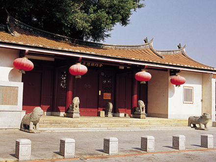

一、历史沿革
「清金门镇总兵署」之原是明万历辛丑年(西元1601年)进士许獬读书的地方,名为「丛青轩」.许獬,字子逊,号钟斗,金门金城镇后湖人,廿八岁中举,三十二岁会试第一,殿试再举二甲一名。
清康熙十九年(西元1680年)设金门镇总兵署,首任总兵陈龙,考量金门城经历明末多次兵祸,原有的千户所城已不能使用，而后浦人丁旺盛等因素，在康熙廿一年将总兵署从金门城迁到後浦的「丛青轩」,之後经过多次改建,规模也屡有扩大,後来两侧有部分拆除始成现在规模。
民国四年金门设县，地方民众俗称「衙门」的总兵署，为金门最高行政中心，历经金门县公署、金门县政府、行政公署、金门防卫部、福建省政府、金门战地政务委员
会、自卫总队部、警察局、临时县议会、行政院处理试办两岸通航事务金门行政协调中心等机关进驻办公。八十五年四月动工规划整修,使得原貎得以修复。
二、建筑特色
为县定古蹟，最大的特色是保留前清衙门形式。总兵署,有正堂,有贮粮库,有官厅和案牍祠,廊分列吏、户、礼、兵、刑、工六部房,前有仪门,仪门前是大门,形制极为完整。气势宏伟的头门，以及大堂、川堂、内署、内宅、厢房，为四进式两廊式闽南四合院。
总兵署前有宽阔的广场，民间习称为「衙门口」。院内榕树遮荫，庭院深邃，後院的「金门树王」是全东南亚最大的木棉树，树龄约三百多年了。
三、展示内容
规划後的总兵署，除大堂、内署明间、内宅明间以腊像重现昔日意象外，其余各室规划为总兵署的相关资料展示，各间展示内容如下：
◆东科房(1)：原是吏、户、礼科房，现作为金门历史源流与金门古代防务展示。
◆东科房(2)：原是吏、户、礼科房，现作为金门历任总兵在金门的事蹟及金门籍武将事略展示区。
◆东将裨厅(1)：丛青轩原主许獬的事蹟与金门防海图。
◆内宅左次间：清代武试意境展示。
◆内宅明间：清代总兵家居会客情境-语音摸拟以腊像仿制总兵与夫人闲话家常的生活情境。
◆内宅右次间：清代水师任务展示。
◆内署右次间：清代兵制武职阶序展示。
◆内署明间：总兵与部属议事情境-语音情境摸拟复原营年总兵召集部属 幕僚商讨事情的腊像情境。
◆内署左次间：清代旗帜与武官服。
◆东室：原为贮饷库，整建後分陈列两部份：
(1)军令、印信展示。
(2)清代的诰敕与封赠制度及规制表。
◆ 大堂：衙署大堂案桌及堂内摆设-是处理重要政务主要场所也是主持审判的地方。
◆西室:原是贮藏王命及书籍之所，今连同地下室作为牢房及清代军法与刑具 。
◆大堂东西室展示馆:地下牢房有腊像陈列。
◆西耳房(1)：清代水师兵器展示。
◆西将裨厅(1)：清代水师战船展示。
◆西将裨厅(2)：清金门总兵署建筑演变及模型展。
◆西科房(2)：原为兵、刑、工科房-现改为旅游服务咨询中心(内有贩卖文化局书籍供游客休憩
地址：金门县金城镇浯江街53号
电话： 886-82-371717
交通资讯：每周一~周五(早上10:00~晚上10:00)每周六、日(早上09:00~晚上10:00)。馆内有专业解说人员提供导览解说